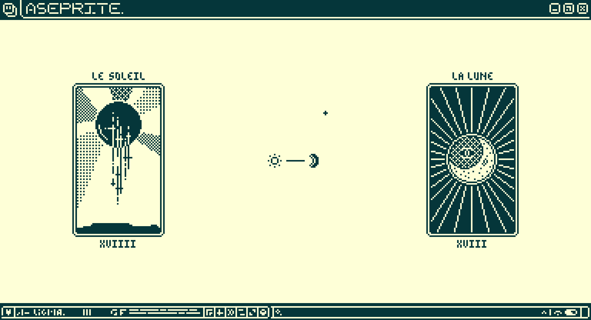
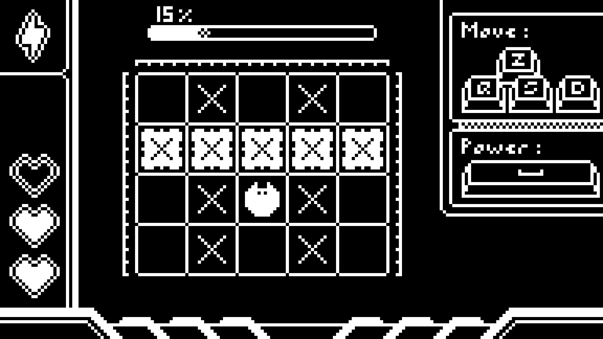
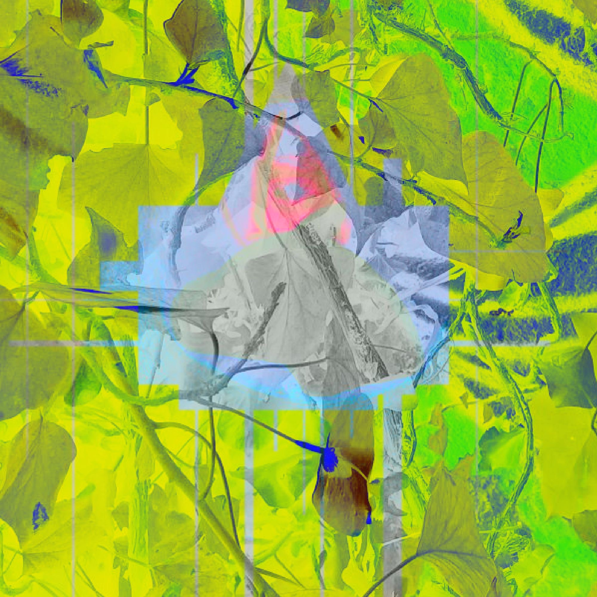
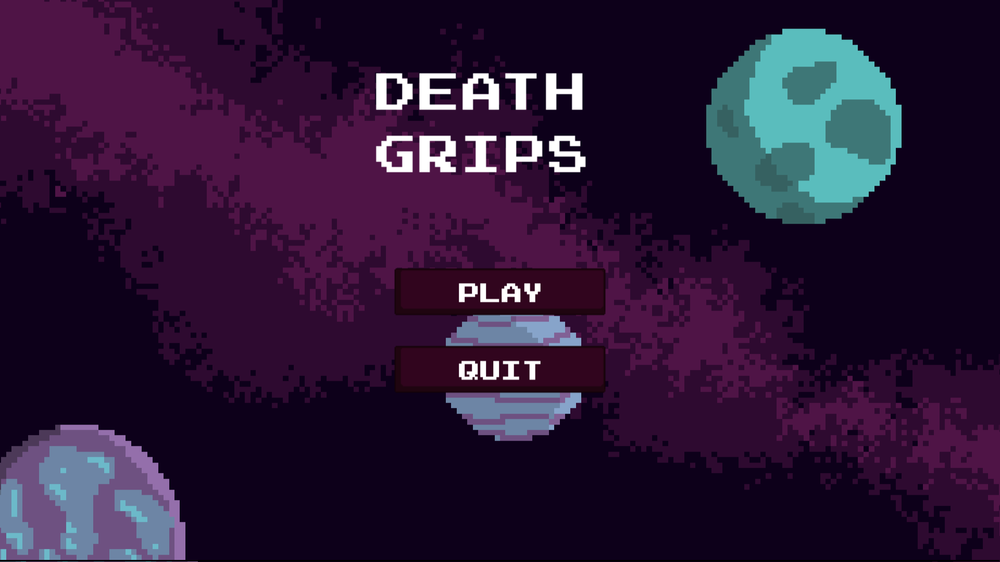

HELLO !
My name is Justin Hurson. I'm a 19 year old computer science student at the University of
Bordeaux. Welcome to my art related portfolio!
I like to think of myself as a creative person. In my free time, I do a lot of pixel art which is sometimes tied in with my video game projets. I also enjoy working on generative art since I'm first and foremost a programmer.
From time to time, I do 3D modelisation with Blender, 2D illustration and photo/video montage using various apps. I also love Frontend web programming, but some people say it can't be art...
This website will let you have a look at what I love to do and what I'm proud of, I really hope you'll like it !
I like to think of myself as a creative person. In my free time, I do a lot of pixel art which is sometimes tied in with my video game projets. I also enjoy working on generative art since I'm first and foremost a programmer.
From time to time, I do 3D modelisation with Blender, 2D illustration and photo/video montage using various apps. I also love Frontend web programming, but some people say it can't be art...
This website will let you have a look at what I love to do and what I'm proud of, I really hope you'll like it !
PIXELART
OtherWorld :
Recently, I've decided to do at least one pixel art per day, even if the art ends
up being unpolished. The first artwork I did of the serie was this one, I'm quite happy with
how it turned out.
The original color palette isn't mine, even if I added one more color to it, I
found it on Lospec.

Justin's Folio v0.1 :
This artwork is the one that motivated me to start this art portfolio. At first, it
was just an animation on Fernando Pino's
portfolio, but in turned in an animation about what does my screen look like when I'm
working on my projects.
After this, I decided to make a website dedicated to my art in opposition to my
professional portfolio.

Moon Card/Sun Card :
As you may have already noticed, this artwork has almost the same color palette as
this current
website. I really wanted to give a great look for my website, so I decided to take my
favorite color
palette instead of looking for something new and end up with an average color palette.
Other than that, I think it's my favorite artwork at this time. the animation really
adds to the
result.

GameArt prototype :
This artwork originally was simply just a random pixel art I did, but it looked
cool and got me inspired
to make a rythm game.
At the time, I was kind of bad at coding, so after 2 weeks of work, I got stuck on
a bug about
instanciating timing and I had to stop working on it. Maybe one day I'll get back to it.

GENERATIVE ART
This part of the website is dedicated to my generative art projects. As said earlier, I love
generative art, the reason is that it is a mix between the 2 things I love to do the most
(except parkour), which are coding and art.
Since generative art is generative, I made a little environment that let you try out different scripts I made and see the result in real time (you can reload the same script to see the difference from one iteration to another).
Since generative art is generative, I made a little environment that let you try out different scripts I made and see the result in real time (you can reload the same script to see the difference from one iteration to another).
background generator
flow field
screensaver
blackhole
BACKGROUND GENERATOR
Even if it's the one that was the easiest to make, this blurry and grainy background generator
is my favourite generative artwork. The colours perfectly match together in majority of cases,
and the grainy effect does add a lot to the final result.
I did use it multiple times for my other projects. It blends very well in the background and does have the 'design' feeling to it.
I did use it multiple times for my other projects. It blends very well in the background and does have the 'design' feeling to it.
OTHER
MR_CHEVAL'S PSYCHEDELIC ADVENTURE :
Mr_Cheval is a child toy I used to play with when I was younger. More recently,
I started doing artwork including him, and today, he's part of my artistic world.
This image is a mix of multiples pictures I took at Bordeaux DARWIN ecosystem,
I then edited them and played with color filters and merging options with Photoshop to get this result.

3D MODEL SET :
While working on a game on Unity, I had to create a car. For this, I decided,
instead of using a free model, to make my own. I used Blender to make the model, and worked
using a reference image of a 70's car.
The game prototype didn't only made me do a car model. I also made a road, a
stuntPark, and a restaurant with a parking on top.

DEATH GRIPS :
Like for web programming, people say that video games aren't art, but I think
it is in a lot of cases. Anyway, I love video games, and I love making them, this one
is a short plateformer game I made for a school project with Kamila Medellel.
I made almost all of the code/gameplay, while Kamila mainly worked on the visuals.
We ended up with a 10 minute game playable in browser, that you can try on itch.io.

ALREADY FINISHED :(